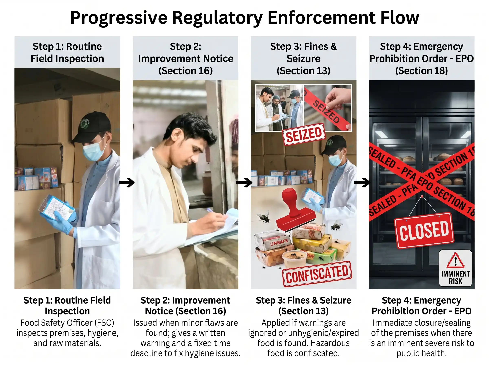
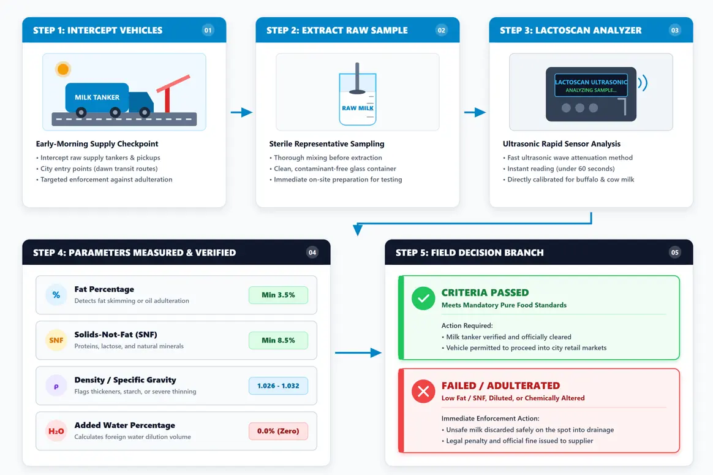
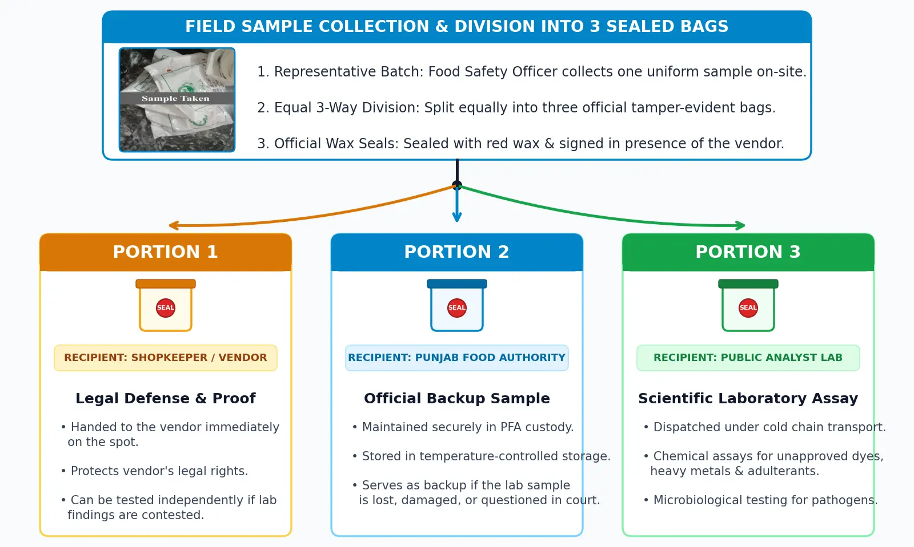
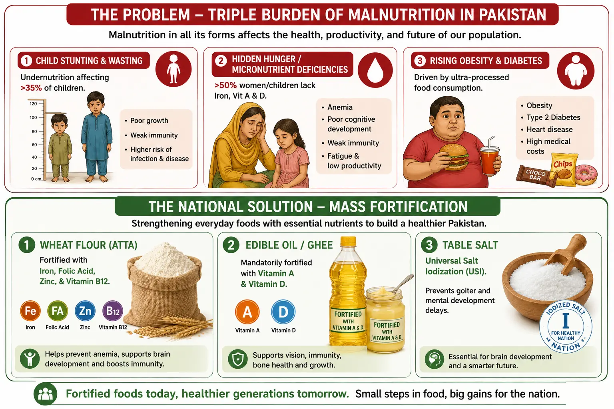
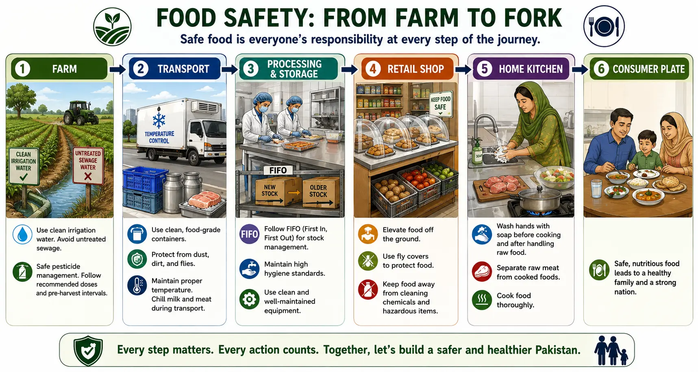

1. Do We Really Know What We Are Eating?
Every single day, millions of families across Pakistan sit down to fresh milk tea, breakfast parathas, hot street shawarmas, fresh meat, and traditional mithai from neighborhood markets. Food brings our families together, fuels our work, and sits at the heart of our culture. Yet very few of us pause before taking a bite to ask a simple question: is the food on my plate truly safe to eat?
Most people judge food by its taste, smell, or appearance. If a curry tastes delicious or a glass of milk looks rich and creamy, we naturally assume it is healthy. In reality, invisible bacteria, toxic heavy metals, and harmful chemical adulterants can turn an everyday meal into a serious health risk – without changing how the food looks or tastes at all.
Food safety is not an abstract academic theory or a concern reserved for large corporate factories. It is a fundamental public health right for every Pakistani citizen. Keeping food clean and unadulterated requires active care at every single link in the supply chain: from the farm where crops are grown, through transport, processing, and retail shops, all the way to our home kitchens. This article explains what food safety really means, how Pakistan’s laws and regulators work on the ground, the major challenges the country faces, and the practical habits that consumers and food businesses can adopt – from farm to fork.

Prefer watching to reading? This short video covers the key ideas of this article in just a few minutes.
2. What Is Food Safety? (And How It Differs from Food Quality)
Before we can build a stronger food safety culture in Pakistan, we need to be clear about what “safe food” actually means. Food safety is the practice of protecting food from biological, chemical, or physical hazards so that it will not cause harm, sickness, or injury when it is prepared and eaten. Food quality, on the other hand, refers to the attributes that make food appealing to consumers – flavor, aroma, color, texture, freshness, and nutritional value.
The two concepts are related, but they are not the same, and confusing them can be dangerous:
- High-quality appearance, unsafe food: a colorful street sandwich or a piece of mithai may look fresh and smell delicious, but if it carries disease-causing bacteria or a toxic industrial dye, it is unsafe – no matter how good it appears.
- Safe food, low-quality appearance: a slightly bruised apple or a plain biscuit that has lost its crunch may look unappealing, yet if it is free of harmful germs and toxins, it is completely safe to eat.
The Three Main Types of Food Hazards
Food becomes unsafe when it is exposed to one or more of three main types of hazards:
- Biological hazards – microscopic organisms such as bacteria, viruses, and molds. The scale of this problem in Pakistan is real: scientific testing of ready-to-eat street foods like burgers and shawarmas in Pakistani cities found that nearly 38% of tested samples were unfit for human consumption because of dangerous bacterial contamination.
- Chemical hazards – harmful substances including pesticide residues, toxic heavy metals such as lead and arsenic absorbed from polluted irrigation water, unapproved food colors, and chemical preservatives.
- Physical hazards – foreign objects that accidentally enter food, such as flies, dust, hair, glass pieces, or nails.
3. Food Adulteration vs. Food Contamination in Pakistan
People often use the words “adulteration” and “contamination” interchangeably, but in Pakistan’s food sector they describe two distinct problems.
Food adulteration is the intentional act of debasing food to earn more money. Traders or processors deliberately dilute staples or mix in cheap, inferior, or harmful substances. Well-documented examples in Pakistan include adding water or starch to raw milk, mixing synthetic dyes into spices such as red chilli powder, and adulterating cooking oils and ghee.
Food contamination, by contrast, is unintentional. Harmful germs, chemicals, or filth enter food because of poor hygiene, dirty water, improper storage, or environmental pollution. A common example is the irrigation of vegetables with untreated sewage water: heavy metals such as lead and arsenic accumulate in the soil and migrate directly into the crops we eat.
Both problems endanger public health, but they require slightly different responses: stricter enforcement and honest trading practices against adulteration, and better hygiene, water quality, and handling practices against contamination.
4. How Pakistan’s Food Laws Protect Consumers
Food safety enforcement in Punjab is grounded in clear legislation. The Punjab Food Authority (PFA) was established under the PFA Act 2011 and is empowered to set scientific food standards, license food vendors, inspect premises, collect samples, and penalize non-compliance. Detailed technical standards – ranging from allowable food additives to proper pre-packaged food labeling – are codified under the Punjab Pure Food Regulations 2018. At the federal level, Pakistan has also established the National Agri-trade and Food Safety Authority (NAFSA) to align national agricultural trade and sanitary standards with the international Codex Alimentarius.
Practical Regulatory Tools
Field officers use a balanced set of legal tools that escalate with the severity and persistence of violations:
- Improvement Notices: written notices issued under Section 16 that clearly list hygiene deficiencies and give the shop owner a specific timeframe to correct them.
- Fines and seizures: financial penalties imposed under Section 13 when warnings are ignored or serious violations are found. Unsafe or expired goods are seized and discarded.
- Emergency Prohibition Orders (EPO): immediate closure orders issued under Section 18 when a facility poses an imminent, severe health risk to the public.

This graduated approach gives honest businesses a fair chance to improve, while giving regulators firm tools against those who repeatedly endanger consumers.
5. Inside the System: Lessons from PFA Field Operations
As a 7th-semester student of B.Sc. (Hons.) Food Science and Technology at the University of Agriculture, Faisalabad (NIFSAT), I completed field training with the Punjab Food Authority in Bahawalpur. Moving from classroom textbooks to real-world regulatory work gave me a practical appreciation of how food safety principles are actually applied in restaurants, bakeries, sweet-making units, soda water plants, water filtration facilities, and ice factories.
Rather than describing individual inspections, I want to share three field practices that show how the system works, because they matter to every consumer:
- Ultrasonic milk testing: milk is one of the most commonly adulterated foods in Pakistan. During early-morning field checks on supply routes, officers analyze raw milk on the spot with a portable LACTOSCAN analyzer, which uses ultrasonic technology to measure fat percentage, solids-not-fat (SNF), density, and added water. Results are compared with field criteria – for mixed milk, a minimum of 3.5% fat and 8.5% SNF – so that diluted or adulterated milk is intercepted before it ever reaches consumers.

- Brix testing of beverages: at soda water production facilities, hand-held refractometers measure Brix levels – the concentration of dissolved sugar – to confirm that beverages contain proper ingredients rather than unapproved artificial mixtures.
- Rapid screening of spices: quick field tests using test tubes, iodine, and hydrochloric acid help officers detect foreign starches and chemical additives in spices such as red chilli powder during shop inspections.
When a formal food sample is collected for laboratory analysis, officers follow a strict three-portion sampling rule designed to protect both consumers and vendors:
- Portion 1 is handed to the food business owner as their own legal record.
- Portion 2 is retained securely by the Food Authority as an official backup.
- Portion 3 is officially sealed and dispatched to the Public Analyst laboratory for chemical and microbiological testing.

What stayed with me most is that effective enforcement is systematic and science-based: standardized field tests, transparent sampling procedures, and penalties that escalate only when warnings are ignored.
6. Major Food Safety and Public Health Challenges in Pakistan
Improving national food safety requires addressing several deep, interconnected challenges:
1. Hygiene and Awareness Gaps
A large portion of small food business operators, street vendors, and kitchen workers have never received formal training in basic food hygiene, personal sanitation, cross-contamination risks, or correct food holding temperatures.
2. Environmental Pollution and Unsafe Water
Irrigating crops with untreated industrial or municipal wastewater introduces hazardous heavy metals into staple vegetables. Scientific studies in Punjab demonstrated that garlic crops irrigated with sewage water accumulated elevated concentrations of lead (Pb) and molybdenum (Mo), creating measurable health risks for the people who eat them.
3. Economic Pressures and Affordability
When household budgets are stretched by inflation, consumers are often forced to prioritize low prices and quantity over safety and hygiene.
4. The Triple Burden of Malnutrition and Food Fortification
Pakistan currently struggles with a severe “triple burden” of malnutrition:
- Persistent child undernutrition and stunting, affecting over 35% of young children.
- Severe micronutrient deficiencies – “hidden hunger” – with more than half of children and women of reproductive age suffering from anemia, iron deficiency, or severe vitamin A and D deficiencies.
- Rising overweight and obesity, driven by growing consumption of nutrient-poor, ultra-processed foods.

To combat hidden hunger across millions of households, Pakistan has implemented mass food fortification programmes: essential iron, folic acid, zinc, and vitamin B12 are added to staple wheat flour (atta); vitamins A and D are mandated in edible oil and ghee; and universal salt iodization prevents thyroid disorders and developmental problems. Fortification is one of the most cost-effective ways a country can improve public nutrition without asking people to change what they eat.
7. The Farm-to-Fork Framework: Practical Safe Practices
Food safety is a continuous chain of custody: hazards can enter at any point along the journey from the farm to the dinner table. The farm-to-fork framework maps that entire journey – farm, transportation, processing and storage, retail shop, home kitchen, and finally the consumer’s table – and reminds us that every link must be protected.

What Consumers Can Do
Ordinary shoppers and home cooks can protect their families with simple everyday habits:
- Inspect packaging: check pre-packed food for intact seals, production dates, and clear expiry dates. Never buy bulging or leaking cans and packets.
- Check shop hygiene: buy fresh meat, milk, and groceries from clean, well-lit, ventilated premises where food is stored elevated off the floor.
- Separate raw and cooked foods: always keep raw chicken, meat, and fish completely separate from ready-to-eat foods to prevent cross-contamination.
- Wash hands thoroughly: wash with soap and clean water for at least 20 seconds before preparing, cooking, or eating food.
- Avoid food kept at foot level: never buy open food items or sweets displayed directly on the ground, where street dust, wash water, and insects easily reach them.
- Use clean drinking water: make sure the water used for drinking, washing raw vegetables, and cooking comes from a tested, clean source.
What Food Businesses and Vendors Must Do
Restaurant owners, shopkeepers, and food handlers carry the greatest responsibility in the chain. Core operational rules include:
- Worker personal hygiene: every food handler should wear clean aprons and hair covers and practice frequent handwashing. No one should handle food while ill.
- Enforce stock rotation (FIFO): practice first-in, first-out so older ingredients are used first, and keep expired stock in a clearly marked, separate area.
- Separate chemical cleaners: store soaps, floor cleaners, and pest sprays in a completely separate cabinet, far away from food storage areas.
- Pest control and waste management: keep garbage bins covered, clean kitchen floors daily, and control flies and rodents around food preparation areas.
- Zero smoking near food: strictly forbid smoking or chewing tobacco inside kitchen and storage areas.
Safe handling and processing also create opportunity: modern preservation technologies can extend the life of Pakistani produce and open export markets. I have explored one such example – freeze-drying Pakistani mangoes for premium export – in another article on this site.
8. Conclusion: The Way Forward for Pakistan
Food safety is not an unachievable dream – it is a daily discipline built on simple hygiene habits, proper storage, public awareness, and firm legal enforcement. My field exposure with the Punjab Food Authority showed me that the system genuinely works when science, law, and cooperation come together.
At the same time, punishment and fines alone cannot fix every food safety challenge. The way forward for Pakistan requires a balanced, multi-sectoral approach:
- Expanding food safety education: regular hygiene training workshops for small shopkeepers, street vendors, and restaurant workers.
- Supporting small vendors: providing basic sanitation infrastructure, clean water access, and low-cost refrigeration to informal street vendors.
- Building consumer awareness: educating the public so they actively choose hygienic shops and demand clean, fortified food products.
- Strengthening field capabilities: equipping inspection teams with rapid testing tools that detect adulteration instantly, on the spot.
Food safety is a shared national responsibility. When government regulators, food business owners, academic researchers, and informed consumers work together, we can protect public health, prevent disease, and ensure a safer, healthier future for every Pakistani – from farm to fork.